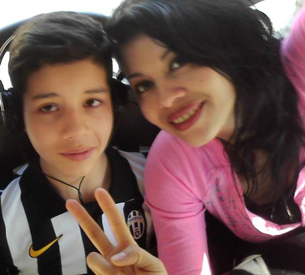

Monserrat
Monserrat Pino Sepulveda, 30 años. Dibujante amateur y amante de la cocina. Soltera con compromiso y “madre” de dos felinos. Me gusta el rock clásico y la música británica en general, admirar y conocer de arte en todas sus disciplinas, el humor negro y sus derivados. Un poco obsesivo compulsiva. Estudiante de Laboratoria Chile e integrante del Squad “WonderWomans”.
Solange
Solange Cayuqueo Venegas, 27 años. Me gustan los dulces, andar en pijama, viajar y conocer. Me encanta pasar el tiempo con “Miga” mi cachorra. Me gusta todo tipo de música y Mickey Mouse. Estudiante de Laboratoria Chile e integrante del Squad “WonderWomans”.
Jessica
Jessica Karelyn Díaz Serrano, 32 años. Venezolana adoptada en Chile, Administradora. Soltera. Actualmente estudiante en Laboratoria Chile para ser Desarrolladora Web e integrante del Squad "WonderWomans". Me gusta hacer yoga, bailar, cocinar, ir al cine y leer.
Daniela

Daniela Paulina Santander Castro, 21 años, futura Desarrolladora Web. Amante de la mecánica automotriz y el cine. Mamá de mi pequeña Emilia. Estudiante de Laboratoria Chile y actual integrante del Squad "WonderWomans".
María
Maria Carreño Laino, 31 años, madre de Bastian de 12 años y Matias que viene en camino, estudiante en Laboratoria Chile en Squad “WonderWomans” me gusta mucho estar al aire libre, viajar y conocer nuevos lugares.
Natalia

Natalia Macarena Contreras Correa, Diseñadora Gráfica Publicitaria, 32 años, Chilena, Felizmente Soltera, dos monstruitos de hijos Mika y Karlo. Actualmente estudiante en Laboratoria Chile en Squad “WonderWomans”. Me encanta Diseñar y andar en bicicleta.
Mónica

Mónica Teresa Villagra Ramírez, 30 años, soltera en esta vida y en la otra, amante de la cocina del rock y el cine, fanática obsesiva de Los Simpsons y me encanta sacar a pasear mis "sobrinas" bóxer y andar en bici. Estudiante de Laboratoria Chile e integrante del Squad “WonderWomans”.
Stephanny

Jedi Master
stephanny@laboratoria.cl
Milena
Milena Andrea Reyes Rubio, 32 años, felizmente comprometida, mamá de una pequeña de 5 años, Matilda y de un hijo perruno "Chewbacca". Aficionada a las peliculas clasicas,la música rock y leer.Estudiante de Laboratoria Chile e integrante del Squad “WonderWomans”